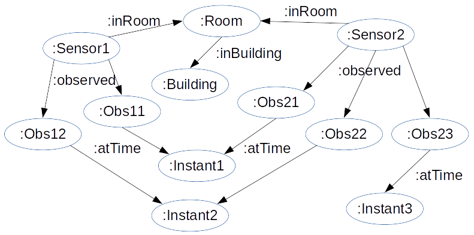
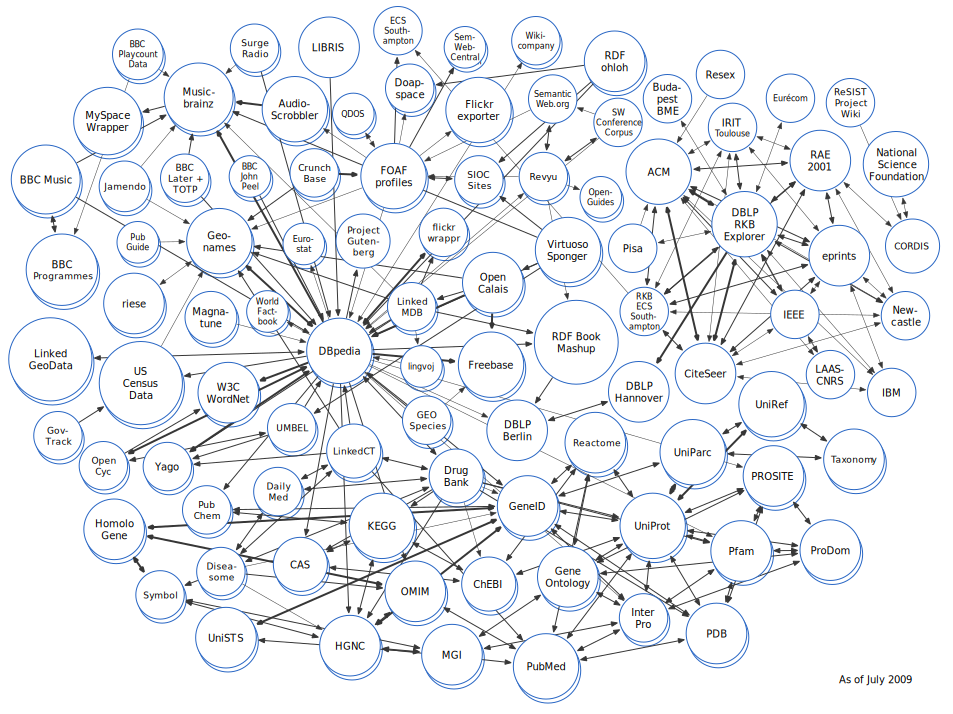
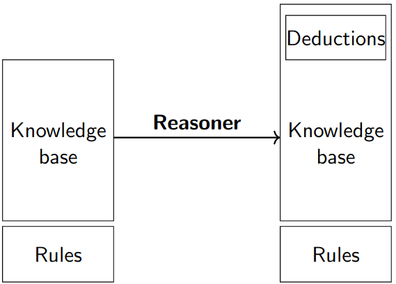

An introduction to the Semantic Web
Nathalie Hernandez, PhD., Nicolas Seydoux, PhD., engineer at Inrupt
Syllabus
Course content
Evaluation
Material
Web page: https://zwifi.eu/public/pages/syllabus_iss.html
Slides: https://zwifi.eu/slides/teaching/5iss/
Some definitions
"The goal of AI is to develop machines that behave as though they were intelligent" - John McCarthy
"If a human could not distinguish between responses from a machine and a human, the machine could be considered 'intelligent'" - Alan Turing
Talking
Turing test
Master natural language
Manipulate knowledge
Understand and reason
Automatic learning
Playing
27/05/2017, Alphago outplays M. Ke Jie, Go world champion, to be in its turn outplayed by DeepMind ref
Seeing
AutoML optimizes neuron networks for computer vision
Key take-away
Language conveys meaning
The model matters
DIKW pyramid
Noise : Stimulus devoid of meaningData : Output of a measureInformation : Data contextualizedKnowledge : Meaning associated to informationWisdom : Attitude driven by knowledge
Formal logic
Logics aims at formally modelling mechanisms of the common sense and reasoning to study and automate them.
What is a logic ?
Constituting elements
A syntax (grammar + vocabulary)
A semantics
A deduction mechanism
Their roles (respectively)
Describe knowledge
Pair it with meaning
Infer new information
Who are these people ?
Tim Berners Lee and Vint Cert
Internet, or the Web?
Internet
The Web
Fortnite
Article wikipédia
SSH
Mail
Git
GitHub
The Web, an Internet application
The World Wide Web
Fundamental principles
Identification of ressources (pages, images, sounds...)Representation of ressources in different serializationsInteraction between agents for representation negociation, resource discovery, etc.
Resource identification: the IRI
Unique and unambiguous identifier
Dereferencable: an IRI can be looked up
URL, URI, IRI
URL: U niform R esource L ocator
URI: U niform R esource I dentifier
IRI I nternational R esource I dentifier
http://subdomain.domain.tld:port/path
Interacting on the Web: HTTP
Client/server protocol
Hypertext navigation
Content negociation
CRUD operations
PUT, GET, PATCH, DELETE
POST, HEAD, OPTIONS...
GET / HTTP/1.1
Host: perdu.com
HTTP/1.1 200 OK
Content-Type: text/html
<html><head><title>...
Invention of the Web
The Web was invented at CERN in 1990 by Tim Berners Lee
Motivation: building an interoperable file system that scales.
A timeline of the Web
1990: First Web browsers
1991: Distribution of browsers, first websites (info.cern.ch )
1995: Amazon is a book store
1998: Google is a seach engine
2001: Wikipedia, an encyclopedia
2006: Twitter, for micro-blogging
2014: Over a billion websites
Some figures of the WWW
Over 1000 billion URL indexed and interconnected
W3C: Standardization for the Web
Founded in april 1993 by Sir Tim B.L., the World Wide Web Consortium (W3C) has 436 members as of November 14th 2020.
What is standardized by the W3C ?
All Web-related technologies
Web documents (HTML, CSS...)
XML and related languages (XPath, and *ML)
Web services (SOAP, WSDL)
Web browsers
Accessibility, payments, consent...
Semantic Web technologies (To be announced)
Other standards organizations
Some Web protocols are standardized by the IETF
IoT: the must-have
What you can do... if you know where to look
Get plane tickets for London this weekend
Check the weather in London this weekend
Look for housing in London this weekend
Check my bank account
Cancel my flight
Order pizza fr comfort
What the user wants
Use complex research tools
Browse to find an information
Quickly find relevant and reliable information
The regular Web is not helping
Finding the cheapest flight is a pain
Finding relevant information about a certain version of a library
What the user sees
What the user understands
In one word : syntactic
Addressing with URLs
Interlinked documents
Multimedia content
All the meaning is directed towards a human user
Adding meaning to the document
With annotations?
<recipe>
<title>Raclette (Recipe)</title>
<ingredient>
<name>Raclette (Cheese)</name>
<origin>Switzerland</origin>
</ingredient>
<link rel="stylesheet" href="screen.css">
<origin>Switzerland</origin>
<side>Potato</side>
</recipe>
Annotation limits
Annotation define information zones
... but not a meaning to these zones
Markup text remains targeted at humans
Data on the "old" Web...
...is raw
A lot of information, but very little metadata
Untyped links
...is driven by supply
Data is structured by the one collecting it
User requirements are only guessed
The old Web is "human-driven"
Tedious tasks are left up to people
Finding good, reliable ressources
Extracting relevant information
Making synthetis of the results
These limitations are very current
Web scale
More and more content.
More and more users.
The paradox
Manual processing gets harder.Automated processing is still very complex.
Tim at it again
Data is available on the Web (has an IRI), under a free licence
.
1-star
Data is structured
.
2-star
Data is expressed in an open format
.
3-star
Data complies with W3C specifications
.
4-star
Data is linked to other data
.
The Web is a graph of linked documents
Each IRI is a graph node
Each href link is a graph edge
Let's apply the same thinking to data
Linked data concepts
Each entity has an IRI
Entities are linked together with typed links
Links are also identified with an IRI
Representing a graph in RDF
Atomic graph unit: the triple
The subject : What/Who are we taking about
The predicate : a property of the subject
The object : Value of the predicate for the subject
Putting triples together to build a graph

Putting triples together to build a graph
Putting triples together to build a graph
The Linked Open Data cloud
Who links what?
Who
A LOT of people
Google,
BBC,
Wikipedia,
IEEE,
IBM,
governments...
What
A LOT of things
Musical,
cultural,
scientific,
geographical,
technical,
personal data...
The LOD in 2007: 12 datasets
The LOD in 2008: 32 datasets
The LOD in 2009: 95 datasets

The LOD in 2010: 203 datasets
The LOD in 2011: 295 datasets
The LOD in 2014: 570 datasets
The LOD in 2018: 1231 datasets
The LOD in 2020: 1255 datasets
Adding Semantics do the Web
Tim Berners Lee, WWW conference, 1994: fundamental article
"The Semantic Web: A new form of Web content that is meaningful to computers will unleash a revolution of new possibilities" - Tim Berners-Lee, James Hendler and Ora Lassila, Scientific American, May 2001
What is an ontology (with the hands) ?
An ontology is a vocabulary allowing the description of data .
What is an ontology (formally) ?
An ontology is a formal, explicit specification of a shared conceptualisation. ref
What's in an ontology?
Concepts
Key ideas of the modelled domain
e.g. Sensor, Service, Temperature...
Relations
Typed links between concepts
e.g. Observes, hasPrecision, InteractsWith...
Axioms
Tools for manipulating ontologies
Ontology applicative lifecycle
Design
Deployment
Exploitation
Ontology applicative lifecycle
Design Deployment
Exploitation
Protégé, the ontology editor
Link
Type
Contains
Vocabulary
Taxonomy
Hierarchical relations
SKOS
"Light" ontology
Hierarchical relations
Non-taxonomic relations
RDFS
"Heavy" ontology
Hierarchical relations
Non-taxonomic relations
Logical axioms
OWL
Focusing on the languages: RDF
What RDF allows
Type a resource
Declare a property
Connect resources with relations
Graph language, no additional semantics
Focusing on the languages: RDFS
What RDFS allows
Classes and relation hierarchies
Domain /range for propertiesAdd labels and comments
RDFS limitations
No set operators
No properties for properties
No class disjunctions
Focusing on the languages: RDFS
RDFS in RDF
RDF is a representation , RDFS is a convention
rdfs:label a rdf:Property ;
rdfs:isDefinedBy <http://www.w3.org/2000/01/rdf-schema#> ;
rdfs:label "label" ;
rdfs:comment "A human-readable name for the subject." ;
rdfs:domain rdfs:Resource ;
rdfs:range rdfs:Literal .
Focusing on the languages : OWL
What OWL allows
What we juste said RDFS did not
Define cardinality restrictions
Define equivalences
Focusing on the languages: OWL
OWL in RDF
owl:sameAs a rdf:Property ;
rdfs:label "sameAs" ;
rdfs:comment "The property [...] two given individuals are equal." ;
rdfs:domain owl:Thing ;
rdfs:isDefinedBy <http://www.w3.org/2002/07/owl#> ;
rdfs:range owl:Thing .
What value do these conventions add?

Reasoning
Inference of new facts from information , knowledge and logics
Detect incoherences and inconsistencies
Different inference methods
Non-taxonomic inference
Introduction to knowledge engineering
Linking ontologies at design time: import
Red imports blue
Linking ontologies at design time: reuse
Red reuses blue
Reuse example: SSN and DUL
Linking ontologies a posteriori: align
Equivalence/Disjoncontion
Subsumption, part-of
Any relation
Automatic alignments
Leverage the expressiveness of ontologies
"Discover" alignments as you go
Similar to content negociation on the Web
Alignement example
SSN et SAREF: alignements de T-box
saref:Device owl:sameAs ssn:Devicessn:startTime rdfs:subClassOf saref:Time
Alignement de A-box
http://sws.geonames.org/2972315 owl:sameAs http://fr.dbpedia.org/resource/Toulouse
schema.org
Created by Google, Microsoft, Yahoo and Yandex
Used in millions of websites
Think about it for SEO
https://schema.org/Person
Where in the W3C layer cake ?
Where in the W3C layer cake ?
Motivation
Interoperability is a source of value creation for the IoT (Source)
IoT challenges
Vertical fracturation Lots of ad-hoc data with a low reusability
High heterogeneity for hardware, software and app. domains


{kind=link}